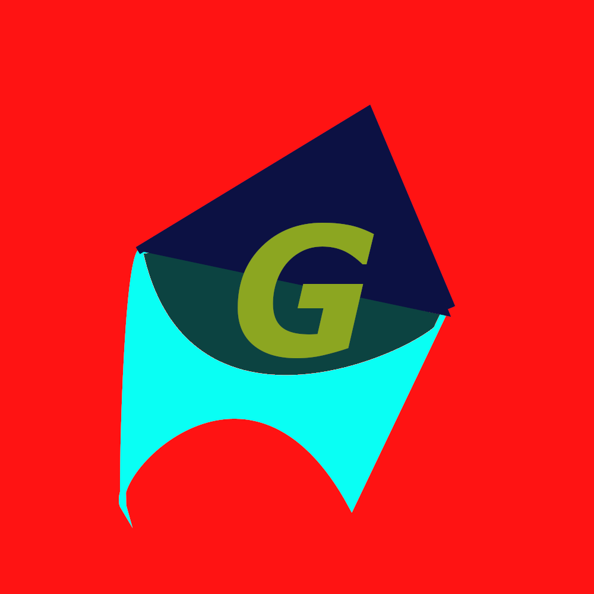

adicionando imagem
< hr > cria uma linha horizontal
a tag < p > cria uma parágrafo, EAI GATA OLHA COMO EU ARRASO
a tag table < table > cria uma tabela com borda preenchimento de celula e espaçamento de célula
na tag td cria celulas horizontais na tabela e está sempre dentro
da tag tr cria celulas verticais
| Nota | Nota 2 |
| passou ou não | passou ou não |
vamos adicionar simbolos especias utilizando & e o nome do caractere em ingles
®
©
™
€
£
¥
¢
δ
Δ
↑
↑
para adicionar uma imagem usamos a tag img e src juntos
nesta frase temos a tag b ou strong como nesse é utilizado sem semântica destaque em negrito
e lapis em italico a tag i ou em.
e nessa tem semântica
e nessa para MANA tem semântica
marcação olha só BOOOM, utilizando a tag mark e para colorir style="background-color:'cor'"
e para afetar todos os mark's mark{
background-color:limegreen;} na tag style dentro da tag < head >
tag big que está obsoleta iyeh ou , palavras ficam grande nessa tag.
e tag small está iyeh em uso, palavras ficam pequenas nessa tag
para marca um texto excluido usasse a tag del, assim gostou?
para sublinhar a tag u te ajuda, te achei ou tag ins que é semantica
texto sobrescrito tipo levar algo para cima x elvado a 20+3 usasse a tag sup, x20+3
texto subescrito tipo descer algo para baixo com a tag sub, exemplo: H2O será H2O
o document.getElementById('teste') é escrito em linguagem JavaScript. com a tag code fica document.getElementById('teste')
o codigo
if(34>29){
printf("joguei e ganhei");
}
não esta como eu deixei mas com a tag pre fica
if(34>29){
printf("joguei e ganhei");
}
para citações simples utilizamos a tag q, então como diria um pai de um amigo: como vai
by the answer for your prays
but i got a secret baby
follow me
ola amigos, como estão tranquilos?
have you ever find out look to get enough
tik tik tik tik toc tiktiktik tok from love I'll back it up
para abreviar tag abbr te mostra foda-se e vagabunda
todo mundo te esperando
é da uma deitada
para inverter o texto a tag bdo com paramentro dir="ltr ou rtl", assim
hoje fui correr um pouco
even 9 1 1 now you craash the layer
para fazer uma lista ordenada a tag ol cria a lista e a tag li é um item dela
escolher da onde comerçar paramentro start e o num, e o tipo de lista com paramentro type="1 ou A ou a ou I ou i"
PARA criar hyperlinks a tag a com parametro target="_blank" com rel="external"
Você pode acessar meu outro site aqui:
Site não completo.
acesse também o nosso canal no youtube:(esse está sem os parametros)Canal JKPLAYER.
está é primeira página do site. Se você quiser, pode acessar a minha segunda pagina(rel next)
para voltar para a pagina anterior (rel prev) e
agora utilizando o paramentro nofollow na tag rel="nofollow" Canal no youtube
terceira pagina com target="_self" e utilizando uma html de outra pasta:testando2

VAMOS aprender a reproduzir áudios, com a tag audio parametros type e media. mp3, wav e ogg
alguns navegadores podem não aceitar alguns formato de musica então podemos usar a tag source para variar nos formatos de audio. mp3, eav, ogg.
atributo controls te mostra os controles de midia e autoplay e loop repetira a midia.
com alguns parametro como:
inserindo vídeos hospedados localmente, use tag video width= poster="nomedoarquivoparathumb.png" e controls autoplay
incorporar o vídeo externo, ou Você copia o codigo do youtube ou use a tag iframe width="" height="" scr="link" title="nome"